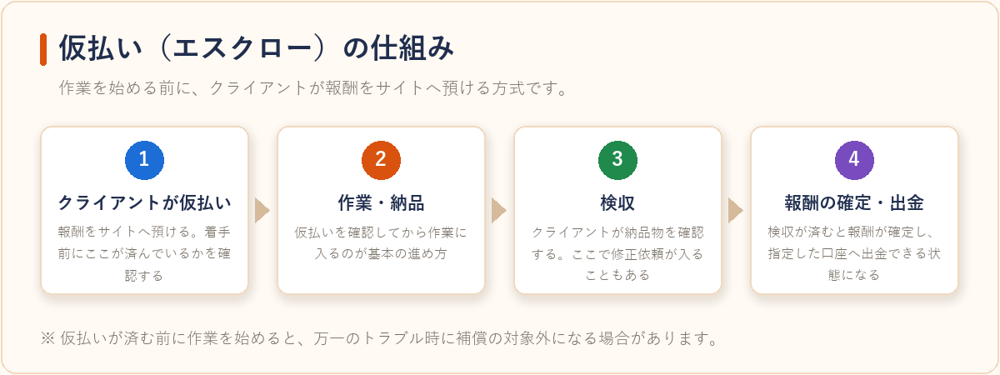
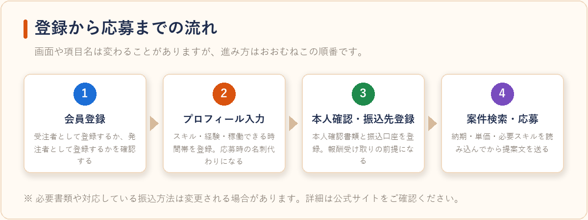
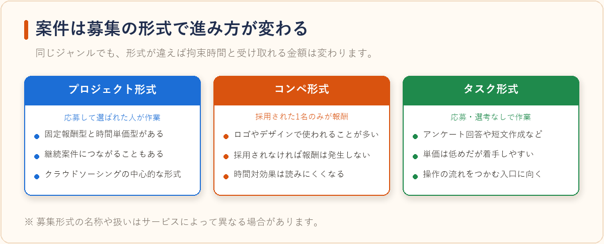
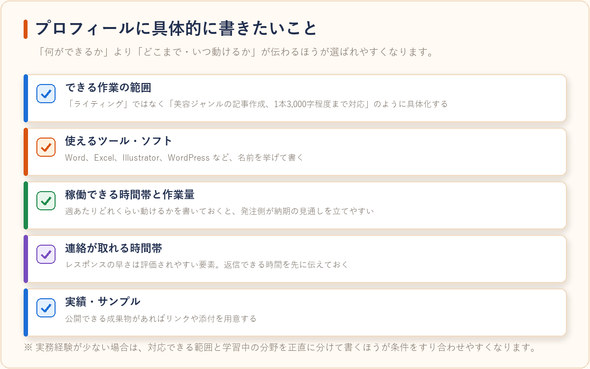

クラウディアの始め方：登録から案件応募までの流れ
2026-07-30 更新
クラウディア（Craudia）は、仕事を依頼したい企業・個人と、在宅で仕事を受けたい人をインターネット上でつなぐクラウドソーシングサイトです。ライティングやデータ入力、デザイン、システム開発など幅広いジャンルの案件が扱われています。「登録してみたいけれど、何から手を付ければいいのか分からない」という人向けに、登録から実際に案件へ応募し、報酬を受け取るまでの一般的な流れを整理しました。
始める前に知っておきたい基本の仕組み
クラウドソーシングでは、受注者（ワーカー）が案件に応募し、発注者（クライアント）が依頼先を決める形で仕事が成立します。報酬はサイトを介してやり取りされ、システム利用手数料が報酬から差し引かれるのが一般的な仕組みです。手数料率はサービスごと、また契約金額や案件形式ごとに設定が異なるため、登録前に公式サイトの料金ページで確認しておくと想定外がありません。
また、多くのクラウドソーシングサイトでは「仮払い（エスクロー）」の仕組みが用意されています。作業を始める前にクライアントがサイトへ報酬を預ける方式で、納品したのに支払われないというトラブルを防ぐための仕組みです。案件を受けるときは、この仮払いが済んでいるかどうかを確認してから作業に入るのが基本になります。

登録から応募までの流れ
実際の画面や項目名は変更されることがありますが、大まかな流れは次の4ステップです。

| ステップ | やること | ポイント |
|---|---|---|
| 1. 会員登録 | メールアドレスなどで無料の会員登録を行う | 受注者として登録するか、発注者として登録するかを確認する |
| 2. プロフィール入力 | スキル・経験・稼働できる時間帯などを登録する | ここが応募時の名刺代わりになるため、最初に時間をかける価値がある |
| 3. 本人確認・振込先登録 | 本人確認書類の提出と、報酬の振込口座を登録する | 報酬受け取りの前提になるので早めに済ませておく |
| 4. 案件検索・応募 | カテゴリや報酬額で絞り込み、提案文を送る | 募集条件（納期・単価・必要スキル）を読み込んでから応募する |
※登録手順・必要書類・対応している振込方法は変更される場合があります。最新の内容は公式サイトでご確認ください。
プロフィールで書いておきたいこと
クラウドソーシングでは、クライアントは文章と実績だけを見て依頼先を判断します。そのため、次のような情報が具体的に書かれているかどうかが結果に影響しやすいとされています。
- できる作業の範囲：「ライティング」ではなく「美容ジャンルの記事作成、1本3,000字程度まで対応」のように具体化する
- 使えるツール・ソフト：Word、Excel、Illustrator、WordPressなど、名前を挙げて書く
- 稼働できる時間帯と週あたりの作業量：納期の見通しを立てやすくなる
- 連絡が取れる時間帯：レスポンスの早さは評価されやすい要素
- 実績・サンプル：公開できる成果物があればリンクや添付を用意する
実務経験が少ない場合は、無理に大きく見せるより、対応できる範囲と学習中の分野を正直に分けて書いたほうが、条件のすり合わせがスムーズになります。

案件形式の違いを押さえておく
クラウドソーシングの案件は、募集の形式によって進み方が変わります。代表的なものは次の3つです。
- プロジェクト形式：応募して選ばれた人が作業する形式。継続案件につながることもある
- コンペ形式：複数の応募者が成果物を提出し、採用された人だけが報酬を受け取る形式。ロゴやデザインで使われることが多い
- タスク形式：アンケート回答や短文作成など、応募や選考なしでその場で作業できる形式。単価は低めだが着手しやすい
初めての場合はタスク形式で操作の流れをつかみ、慣れてきたらプロジェクト形式で継続的な取引を狙う、という進め方が負担が少ない方法として挙げられます。

応募から報酬受け取りまで
応募（提案）が採用されると、条件のすり合わせ、仮払いの確認、作業、納品、検収という順に進みます。検収が完了すると報酬が確定し、指定した口座へ出金できる状態になります。出金には最低金額や振込手数料、締め日が設定されていることが多いため、あらかじめ条件を確認しておくと計画が立てやすくなります。
なお、在宅ワークの報酬は原則として確定申告や住民税申告の対象になります。金額や本業の有無によって扱いが変わるため、報酬額や経費の記録は最初から残しておくことをおすすめします。詳しくは在宅ワークの契約・報酬・確定申告の基礎知識まとめもご参照ください。
初心者がつまずきやすいポイント
- 提案文がテンプレートのまま応募してしまう：案件ごとの募集内容を読み込まず、使い回しの提案文を送ると採用されにくい傾向があります。案件内容に触れた一言を添えるだけでも印象が変わります。
- 納期を厳しく見積もりすぎる：初めての作業は想定より時間がかかることが多いため、余裕を持った納期で提案するほうが結果的に信頼につながりやすいです。
- 仮払いの確認を怠る：仮払いが完了する前に作業を始めてしまうと、万一のトラブル時に補償の対象外になる場合があります。着手前に仮払い状況を確認する習慣をつけましょう。
- 連絡のレスポンスが遅い：クライアントとのやり取りが滞ると評価に影響することがあるため、対応できる時間帯はあらかじめプロフィールに明記しておくと安心です。
注意：登録条件・手数料・出金ルールは各サービスの都合で変更されることがあります。登録前に必ず公式サイトで最新の条件をご確認ください。
よくある質問
特別なスキルがなくても案件は受けられますか？
データ入力やアンケート回答など、未経験でも取り組みやすいタスク形式の案件が用意されていることが多く、そこから経験を積んで単価の高い案件へステップアップしていく人も多く見られます。
本業（会社員）をしながらでも登録できますか？
多くのクラウドソーシングサイトは副業としての利用も想定されており、会社員をしながら登録すること自体は可能です。ただし勤務先の就業規則で副業が制限されている場合があるため、事前に確認しておくと安心です。
他のクラウドソーシングサービスとどう違いますか？
サービスによって得意な案件ジャンルや手数料率、サポート体制が異なります。オンラインアシスタント代行やエージェント型サービスとの違いについては、在宅ワーク・クラウドソーシングサービス比較で詳しく比較しています。